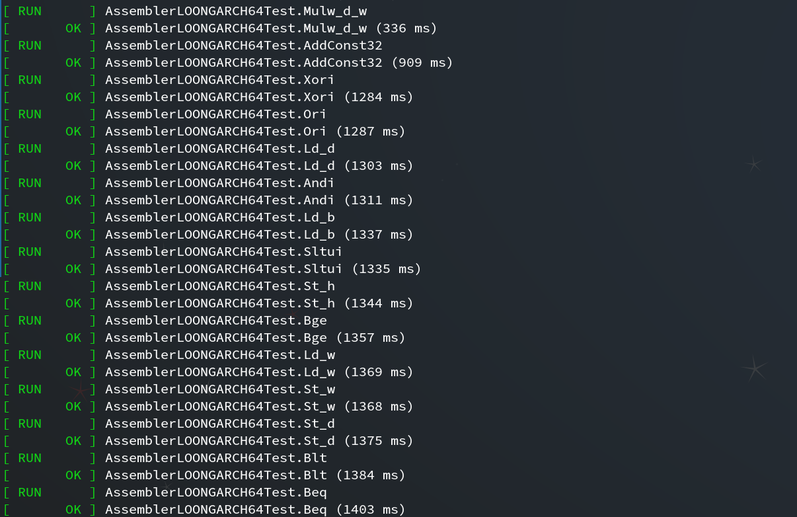
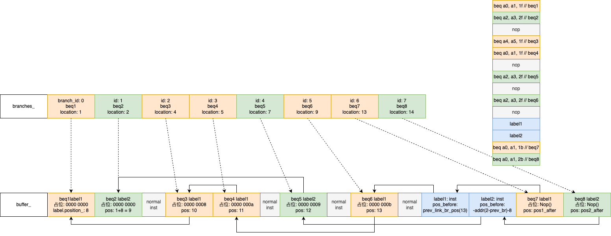
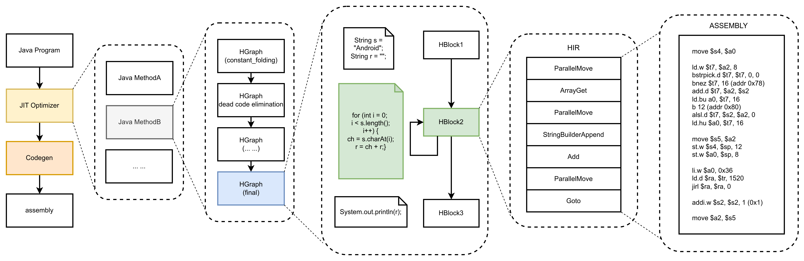
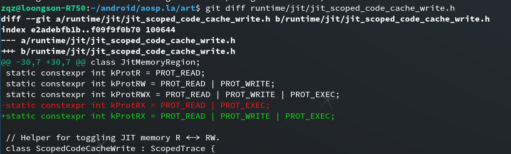
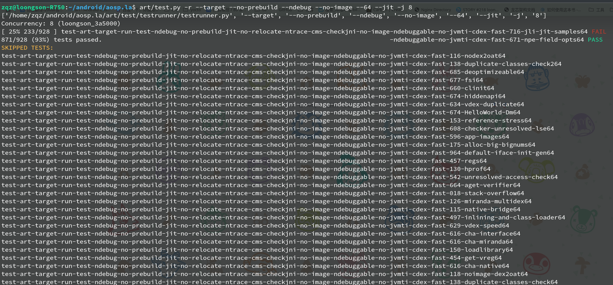
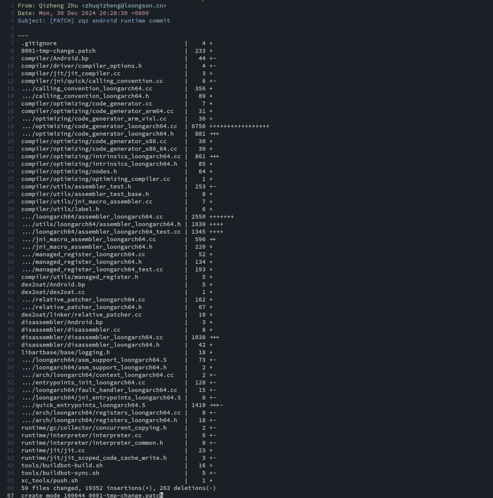

<div class="middle center"> <div style="width: 100%"> # 2024 年度总结 <hr/> By [朱奇正](https://github.com/baibaidashixiong) <div style="text-align: right; margin-top: 1em;"> <p>2025.1.3 </p> </div> </div> </div> <!--s--> <div class="middle center"> <div style="width: 100%"> # 目录 <hr/> 1. 完成JNI/汇编器(1~5月)<br> 2. 代码生成器/反汇编器(6~7月)<br> 3. Debug<br> </div> </div> <!--s--> <div class="middle center"> <div style="width: 100%"> # Part.1 <hr/> 完成JNI/汇编器 </div></div> <!--v--> ## 完成JNI - 设置通用入口点 - art_quick_generic_jni_trampoline - jni trampoline ```flow +--> lookup stub(for lazy load) | art_quick_generic_jni_trampoline -+--> native code | +--> jni_trampoline --> native code ``` <!--v--> ## 完成JNI - JNI Compiler ```java [1-3|4-5|6-7|9-17|19-20] // 1. Build the frame saving all callee saves, Method*, and PC return address. // For @CriticalNative, this includes space for out args, otherwise just the managed frame. __ BuildFrame(current_frame_size, method_register, callee_save_regs); // 2. Write out the end of the quick frames. __ StoreStackPointerToThread(Thread::TopOfManagedStackOffset<kPointerSize>()); // 3. Move frame down to allow space for out going args. __ IncreaseFrameSize(main_out_arg_size); ... // 8. Create 1st argument, the JNI environment ptr. // Register that will hold local indirect reference table if (main_jni_conv->IsCurrentParamInRegister()) { ManagedRegister jni_env = main_jni_conv->CurrentParamRegister(); __ LoadRawPtrFromThread(jni_env, Thread::JniEnvOffset<kPointerSize>()); } else { FrameOffset jni_env = main_jni_conv->CurrentParamStackOffset(); __ CopyRawPtrFromThread(jni_env, Thread::JniEnvOffset<kPointerSize>()); } ... // 18. Finalize code generation __ FinalizeCode(); ``` <!--v--> ## 完成汇编器 - Compiler Test(Based on GTEST) ```c++ template <typename EmitOp> void TestAddConst(const std::string& test_name, size_t bits, const std::string& suffix, EmitOp&& emit_op) { int64_t kImm12s[] = { 0, 1, 2, 0xff, 0x100, 0x1ff, 0x200, 0x3ff, 0x400, 0x7ff, -1, -2, -0x100, -0x101, -0x200, -0x201, -0x400, -0x401, -0x800, }; int64_t kSimplePositiveValues[] = { 0x800, 0x801, 0xbff, 0xc00, 0xff0, 0xff7, 0xff8, 0xffb, 0xffc, 0xffd, 0xffe, }; int64_t kSimpleNegativeValues[] = { -0x801, -0x802, -0xbff, -0xc00, -0xff0, -0xff8, -0xffc, -0xffe, -0xfff, -0x1000, }; std::vector<int64_t> large_values = CreateImmediateValuesBits(bits, /*as_uint=*/ false); auto kept_end = std::remove_if(large_values.begin(), large_values.end(), [](int64_t value) { return IsInt<13>(value); }); large_values.erase(kept_end, large_values.end()); large_values.push_back(0xfff); std::string tmp_name = GetRegisterName(TMP); std::string expected; for (XRegister* rd : GetRegisters()) { std::string rd_name = GetRegisterName(*rd); std::string addi_rd = "addi." + suffix + " " + rd_name + ", "; std::string add_rd = "add." + suffix + " " + rd_name + ", "; for (XRegister* rs1 : GetRegisters()) { // TMP can be the destination register but not the source register. if (*rs1 == TMP) { continue; } std::string rs1_name = GetRegisterName(*rs1); for (int64_t imm : kImm12s) { emit_op(*rd, *rs1, imm); expected += addi_rd + rs1_name + ", " + std::to_string(imm) + "\n"; } auto emit_simple_ops = [&](ArrayRef<const int64_t> imms, int64_t adjustment) { for (int64_t imm : imms) { emit_op(*rd, *rs1, imm); expected += addi_rd + rs1_name + ", " + std::to_string(adjustment) + "\n" + addi_rd + rd_name + ", " + std::to_string(imm - adjustment) + "\n"; } }; emit_simple_ops(ArrayRef<const int64_t>(kSimplePositiveValues), 0x7ff); emit_simple_ops(ArrayRef<const int64_t>(kSimpleNegativeValues), -0x800); for (int64_t imm : large_values) { emit_op(*rd, *rs1, imm); expected += "li.d " + tmp_name + ", " + std::to_string(imm) + "\n" + add_rd + rs1_name + ", " + tmp_name + "\n"; } } } DriverStr(expected, test_name); } ``` <!--v--> ## 完成汇编器 - Compiler Test(Based on GTEST) <div style="text-align: center;"> <br/>  </div> <!--v--> ## 完成汇编器 - Linker - Emit - Reverse(nop) - Relocate <div style="text-align: center;"> <br/>  </div> <!--s--> <div class="middle center"> <div style="width: 100%"> # Part.2 <hr/> 代码生成器/反汇编器 </div> </div> <!--v--> ## 代码生成器 - Framework ```bash Java Method -> HGraph -> HBlock -> HIR -> Assembly ``` <div style="text-align: center;"> <br/>  </div> <!--v--> ## 反汇编器 - the oppsite of assembler ```c++ void DisassemblerLoongarch64::Printer::PrintAlsl(uint32_t insn32) { uint32_t rd = GetRd(insn32); uint32_t rj = GetRj(insn32); uint32_t rk = GetRk(insn32); uint32_t op = insn32 >> 17; uint32_t sa2 = (insn32 >> 15) & 0x3u; if (op == 0x0u) { os_ << "alsl.w" << " " << XRegName(rd) << XRegName(rj) << ", " << XRegName(rk) << ", " << sa2; } else if (op == 0x1u) { os_ << "alsl.wu" << " " << XRegName(rd) << XRegName(rj) << ", " << XRegName(rk) << ", " << sa2; } else { os_ << "<unknown32>"; } } ``` <!--s--> <div class="middle center"> <div style="width: 100%"> # Part.3 <hr/> Debug </div> </div> <!--v--> ## Debug - 断点插入失效？ - JVM CodeCache: rwxp - ART CodeCache: r-xs - gbdserver: soft breakpoint only. <div style="text-align: center;"> <br/>  </div> <!--v--> ## Debug - TraceExecution - trace invocation before each bytecode execution. ```c++ for (uint32_t i = 0; i < shadow_frame.NumberOfVRegs(); ++i) { uint32_t raw_value = shadow_frame.GetVReg(i); ObjPtr<mirror::Object> ref_value = shadow_frame.GetVRegReference(i); oss << android::base::StringPrintf(" vreg%u=0x%08X", i, raw_value); if (ref_value != nullptr) { if (ref_value->GetClass()->IsStringClass() && !ref_value->AsString()->IsValueNull()) { oss << "/java.lang.String \"" << ref_value->AsString()->ToModifiedUtf8() << "\""; } else { oss << "/" << ref_value->PrettyTypeOf(); } } } ``` <!--v--> ## Debug - Result <div style="text-align: center;"> <br/>  </div> <!--s--> <div style="text-align: center;"> <br/>  </div> <!--s--> ## 总结 - 长进 - Debug能力有所增强 - 对编译器/安卓系统理解加深 - 不足 - 与他人交流不足 - 增加论文阅读 <!--v--> <div class="middle center"> <div style="width: 100%"> # 谢谢！ <hr> </div> </div>